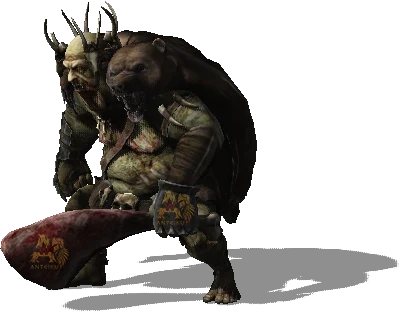
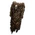
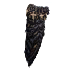
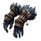
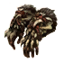
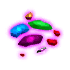

Открыть в интерактивной вики →

| Уровень | 13 |
|---|---|
| Зоны атаки | ближняя, дальняя, ментальная |
| Шанс дропа 100% — уровни | 1-15 |
| Шанс дропа 90% — уровни | 16-20 |
| Шанс дропа 70% — уровни | 21+ |
| Группа боссов | Непокой |
| Сила (PvE) | 228 |
| Аспект | Velhar |
| Здоровье | 500 |
| Мана | 300 |
| Выносливость | 700 |
| Путь сложности | Тень |
Локация
- Логово Урага
- m536
Команда

Навыки


Как добраться
- m536 — путь: Трентис → Приселок Трентиса → m536
Умения
Дроп
| Рары | Синергетики | Эпики | |||
 Рары Рары Рары Рары | |||||
Прочее:  Грибы Грибы  Зерно Зерно  Цветные камни | |||||